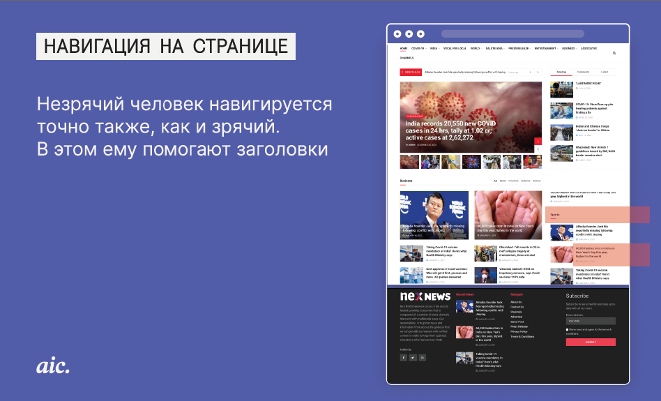
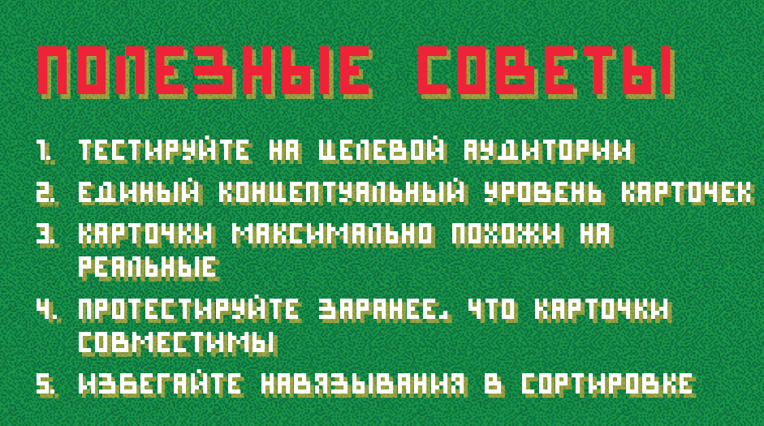
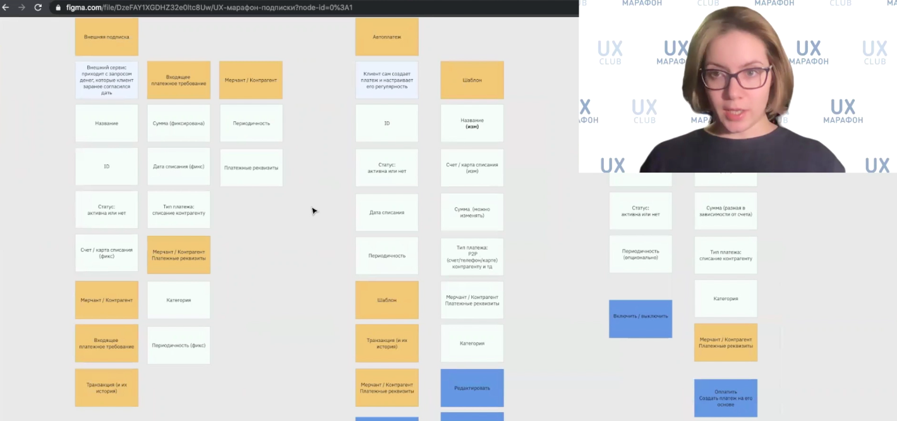
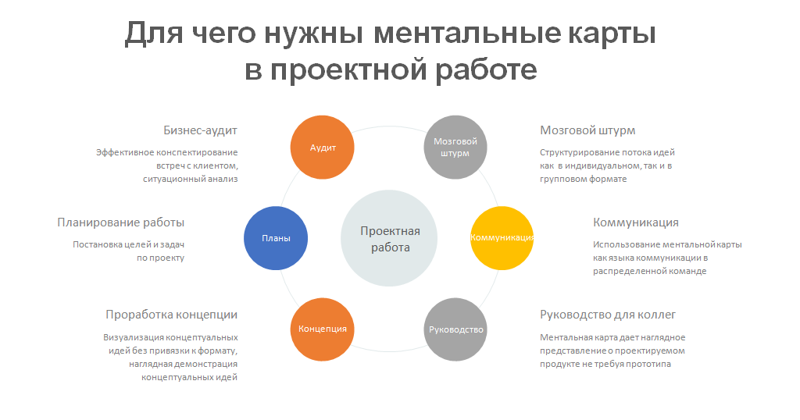
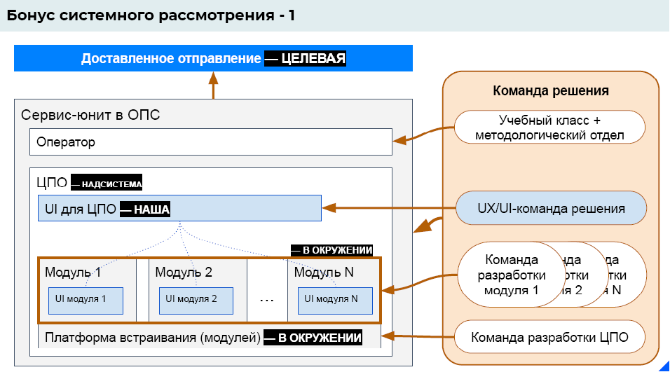
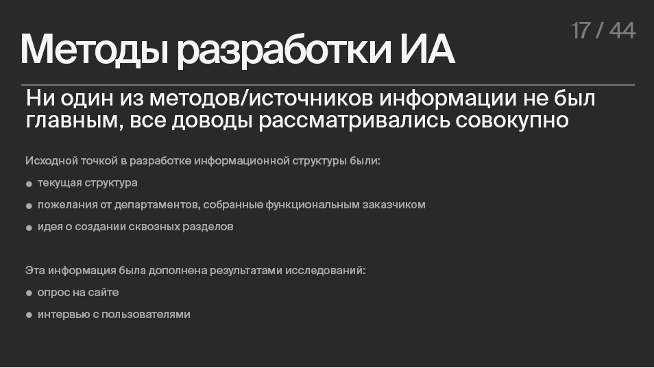

онлайн-конференция для тех, кто делает
удобные цифровые продукты

Войти
8 взглядов на информационную архитектуру
28 января состоялась онлайн-конференция
UX-Марафон #22
, посвящённая вопросам информационной архитектуры. Впрочем, по формату это был скорее практический курс-интенсив, включающий в себя теорию, мастер-классы и разбор реальных кейсов. Восемь экспертов в сфере ИА поделились своим видением, что представляет собой информационная архитектура и чем она важна с точки зрения UX-специалиста. После каждого доклада слушатели могли пообщаться со спикерами, задав вопрос в живом UX-чате и сразу же получив экспертный ответ.
Что такое информационная архитектура, как она влияет на UX и на успешность продукта, и почему так важно уделять ей должное внимание, рассказал в своей фундаментальной лекции по основам ИА один из популярнейших спикеров нашей конференции
Алексей Бородкин.
На примере проектирования книжного интернет-магазина Алексей вывел три определения информационной архитектуры, представляющие собой три основные грани этого явления:
1) навигационная структура цифрового продукта;
2) описание структуры подачи контента;
3) описание структуры данных в их взаимосвязи.
Следующий спикер, директор практики Human Experience в AIC Валерия Курмак, затронула в своём докладе важную тему цифровой доступности и показала, какую роль информационная архитектура играет в доступности сайтов и мобильных приложений для незрячих пользователей.
Практический блок конференции открыл
Павел Шерер, продюсер и архитектор цифровой артели Eleven. На примере приложения для отслеживания миграции полосатых тюленей он показал, как собрать с нуля простую информационную архитектуру, используя такие инструменты, как Confluence и сервиса
diagrams.net.
Виталий Мазуревич, Product Designer компании Магнит, провёл мастер-класс по карточной сортировке. Этот метод исследования помогает решать одну из важных задач ИА – организацию навигации и классификацию контента. В теоретической части своего доклада он рассказал о принципах и основных видах карточной сортировки, а затем продемонстрировал, как организовать открытую карточную сортировку с помощью инструмента Optimal Workshop.
Практической блок продолжили Анастасия Попова (Альфа-Банк) и Михаил Галушко (Центр Финансовых Технологий). Анастасия Попова в своём докладе «Объектная модель в проектировании» пояснила, как работа с логическими сущностями помогает принимать решения в информационной архитектуре и для чего необходимо применять объектную модель дизайнерам и проектировщикам. В качестве примера Анастасия разобрала тестовое задание для UX-дизайнеров, которое используется в Альфа-Банке: разработать решение, помогающее пользователям банковского приложения отслеживать расходы по автоплатежам и подпискам и управлять ими.
Наконец, последний блок UX-Марафона #22 был посвящён кейсам из практики. Сергей Петров (Почтатех) разобрал с позиций ИА свой самый свежий кейс – новый интерфейс сервисной платформы для операторов в отделениях Почты России. Перед командой Почтатеха стояла задача пересобрать платформу, содержащую несколько десятков крайне разнородных сервисов, в виде единой эко-системы и установить интерфейсный стандарт для включаемых в неё модулей.
Денис Васильев (AIC) рассказал о разработке информационной архитектуры нового сайта Банка России. Необходимо было в достаточно сжатые сроки выстроить понятную навигацию, разбив разные типы информации по разделам, дать пользователю возможность быстро искать и фильтровать информацию, а также создать подходящий формат отображения для разных типов контента.
Несмотря на сжатые сроки, команда AIC вышла с инициативой провести ряд исследований, чтобы получить недостающую информацию о пользователях, их потребностях, и о том, как работает текущий сайт. Как показала практика, это было правильным решением.
А ещё хотим напомнить, что 25 февраля с 11 до 18 ч. состоится UX-Марафон #23 | Паттерны дизайн-менеджмента. Куратор события Юрий Ветров соберет дизайн-директоров Яндекс, CreativePeople, Acronis и Redmadrobot, чтобы они рассказали про найм, развитие и интеграцию дизайнеров в команду.
На примере проектирования книжного интернет-магазина Алексей вывел три определения информационной архитектуры, представляющие собой три основные грани этого явления:
1) навигационная структура цифрового продукта;
2) описание структуры подачи контента;
3) описание структуры данных в их взаимосвязи.
“Прорабатывая ИА, вы не просто прорабатываете что-то необходимое для системного анализа – вы заботитесь о том, чтобы продукт был цельным, чтобы он создавал цельный пользовательский опыт, а значит – был коммерчески успешен”
Следующий спикер, директор практики Human Experience в AIC Валерия Курмак, затронула в своём докладе важную тему цифровой доступности и показала, какую роль информационная архитектура играет в доступности сайтов и мобильных приложений для незрячих пользователей.

Объяснив принцип действия скринридера, с помощью которого незрячие люди воспринимают контент, Валерия рассказала о типичных ошибках проектировщиков, которые в итоге делают продукт недоступным для этой категории пользователей. Она подчеркнула, что цифровая доступность (accessibility) не требует каких-либо специфических разработок и обеспечивается в первую очередь чёткой информационной архитектурой и корректной вёрсткой приложения или сайта.
“Я покажу вам, как создаётся информационная архитектура, но имейте в виду, что это далеко не единственный способ её создания, и в этом нет ничего страшного или странного. Более того – у вас есть возможность сочетать разные методологии, разные подходы к созданию ИА. Главное – чтобы она решала свои основные задачи: давала возможность гибко управлять технической стороной продукта (масштабированием, обменом данными, расширением параметров/свойств и т.д.) и позволяла интуитивно использовать ваш продукт”
Виталий Мазуревич, Product Designer компании Магнит, провёл мастер-класс по карточной сортировке. Этот метод исследования помогает решать одну из важных задач ИА – организацию навигации и классификацию контента. В теоретической части своего доклада он рассказал о принципах и основных видах карточной сортировки, а затем продемонстрировал, как организовать открытую карточную сортировку с помощью инструмента Optimal Workshop.

Участники конференции смогли почувствовать себя в роли респондентов, а затем вместе со спикером проанализировать полученные результаты, используя сводную таблицу карточек и матрицу подобия.
Практической блок продолжили Анастасия Попова (Альфа-Банк) и Михаил Галушко (Центр Финансовых Технологий). Анастасия Попова в своём докладе «Объектная модель в проектировании» пояснила, как работа с логическими сущностями помогает принимать решения в информационной архитектуре и для чего необходимо применять объектную модель дизайнерам и проектировщикам. В качестве примера Анастасия разобрала тестовое задание для UX-дизайнеров, которое используется в Альфа-Банке: разработать решение, помогающее пользователям банковского приложения отслеживать расходы по автоплатежам и подпискам и управлять ими.

Анастасия Попова продемонстрировала, как в ходе построения объектной модели для автоплатежа, сервиса получения платежей и внешней подписки удалось выявить свойства каждого из этих объектов, выделить их подсистемы и действия с ними.

В свою очередь, Михаил Галушко рассказал о ментальных картах и наглядно показал, как с их помощью двигаться от общего к частному в процессе создания информационной архитектуры небольшого банковского сайта.
“Ментальные карты – это метод структурирования информации с использованием записи в виде диаграммы связей. Структурирование осуществляется от общего к частному или от начала процесса к его завершению. Таким образом, сам формат этого инструмента идеально подходит для работы с информационной архитектурой”
Наконец, последний блок UX-Марафона #22 был посвящён кейсам из практики. Сергей Петров (Почтатех) разобрал с позиций ИА свой самый свежий кейс – новый интерфейс сервисной платформы для операторов в отделениях Почты России. Перед командой Почтатеха стояла задача пересобрать платформу, содержащую несколько десятков крайне разнородных сервисов, в виде единой эко-системы и установить интерфейсный стандарт для включаемых в неё модулей.

Попутно Сергей Петров дал собственное определение информационной архитектуры цифрового продукта.
“Информационная архитектура – это организация и структурирование контента таким образом, чтобы пользователь верно интерпретировал этот контент, то есть, решал задачу потребителя и выполнял задачу бизнеса”
Денис Васильев (AIC) рассказал о разработке информационной архитектуры нового сайта Банка России. Необходимо было в достаточно сжатые сроки выстроить понятную навигацию, разбив разные типы информации по разделам, дать пользователю возможность быстро искать и фильтровать информацию, а также создать подходящий формат отображения для разных типов контента.
Несмотря на сжатые сроки, команда AIC вышла с инициативой провести ряд исследований, чтобы получить недостающую информацию о пользователях, их потребностях, и о том, как работает текущий сайт. Как показала практика, это было правильным решением.
“В проектах со сложной информационной архитектурой фаза исследования является обязательной, даже если изначально на неё не заложено времени/денег”

Все доклады и онлайн-конференции UX-Марафон #22 | Информационная архитектура можно посмотреть в записи на
платформе UX-Марафон. Вы можете приобрести доступ к докладу или ко всем докладам события.
А ещё хотим напомнить, что 25 февраля с 11 до 18 ч. состоится UX-Марафон #23 | Паттерны дизайн-менеджмента. Куратор события Юрий Ветров соберет дизайн-директоров Яндекс, CreativePeople, Acronis и Redmadrobot, чтобы они рассказали про найм, развитие и интеграцию дизайнеров в команду.